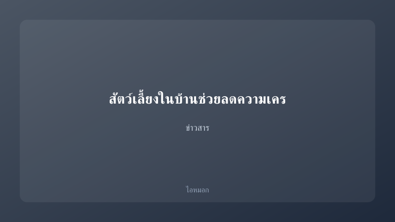
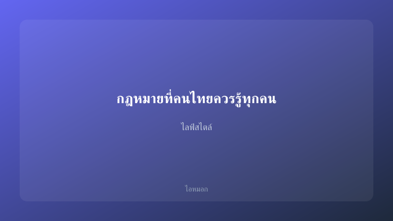
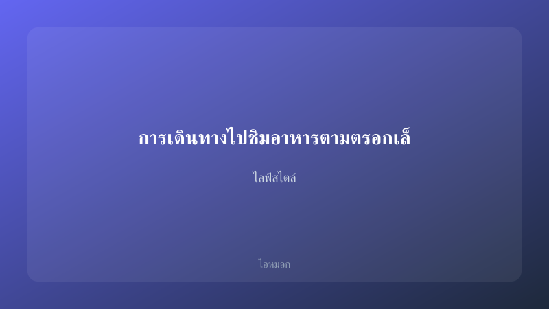
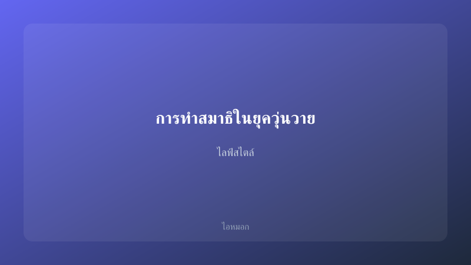

บทความล่าสุด (46 บทความ)

การเปลี่ยนแปลงของเทคโนโลยีกับการใช้ชีวิตประจำวัน
เทคโนโลยีกับการใช้ชีวิตประจำวันของเรานี่แหละ มันเป็นสิ่งที่แยกออกจากกันยากมากเลยนะ! นึกภาพดูสิว่าเมื่อก่อนเวลา…

การติดตั้งและใช้งาน IoT ในบ้านสำหรับผู้เริ่มต้น
สวัสดีครับทุกคน วันนี้เรามาพูดถึงเทรนด์ที่กำลังมาแรงในวงการเทคโนโลยีกันดีกว่า นั่นก็คือ "บ้านอัจฉริยะ" หรือที่…

อุปกรณ์ไฮเทคสำหรับคนทำอาหารยุคใหม่
เมื่อเราพูดถึงการทำอาหารในยุคนี้ หลายๆ คนอาจจะเริ่มสงสัยว่ามีเครื่องครัวหรืออุปกรณ์ต่างๆ ที่ช่วยให้การทำอาหารง…

เมืองอัจฉริยะกับการใช้ชีวิตในยุคดิจิทัล
ทำไมเราถึงควรสนใจเมืองอัจฉริยะในยุคดิจิทัล? 🌐🏙️

ภารกิจอาร์ทิมิส 2 แสดงให้เห็นว่าเราสามารถลงจอดบนดวงจันทร์ได้อย่างไร?
อาร์เทมิส 2 มาถึงแล้ว! นาซาเตรียมนำมนุษย์กลับไปดวงจันทร์

ภารกิจอาร์ทิมิส 2 แสดงให้เห็นว่าเราสามารถลงจอดบนดวงจันทร์ได้อย่างไร
สวัสดีจ้า เพื่อน ๆ วันนี้เรามาพูดถึงภารกิจ Artemis II กันดีกว่า! ถ้าพูดถึงการลงจอดบนดวงจันทร์ หลายคนอาจจะคิดว่…

การหยุดยิง หมายถึง การยุติสงครามหรือไม่?
การหยุดยิง หมายถึง การยุติสงครามหรือไม่? เมื่อพูดถึง Ceasefire คนส่วนใหญ่อาจจะสงสัยว่าจริงๆ แล้วมันคืออะไร และ…

พลเรือนได้พักหายใจชั่วคราวเมื่อสหรัฐฯ-อิหร่านหยุดยิง
พลเรือนได้พักหายใจชั่วคราวเมื่อสหรัฐฯ-อิหร่านหยุดยิง: ในข่าวดีๆ ที่เกิดขึ้นวันนี้ ความตึงเครียดระหว่างสหรัฐอเม…

สัตว์เลี้ยงในบ้านช่วยลดความเครียดให้กับผู้ป่วยโรคโควิด-19
สวัสดีค่ะทุกคน! วันนี้เรามาพูดถึงสัตว์เลี้ยงในบ้านและวิธีที่มันมาช่วยลดความเครียดให้กับผู้ป่วยโรคโควิด-19 กันน…

หยุดยิง
ทำไมเราถึงต้องหยุดยิง? คุณเคยสงสัยไหมว่า ทำไมการหยุดยิงถึงสำคัญในชีวิตประจำวันของเรา? อาจจะฟังดูห่างไกลจากชีวิ…

ภารกิจอาร์ทิมิส 2 แสดงให้เห็นว่าเราสามารถลงจอดบนดวงจันทร์ได้อีกครั้งได้อย่างไร?
ตั้งคำถามน่าสงสัย: ทำไมเราถึงยังไม่ได้เห็นการลงจอดดวงจันทร์อีกครั้งนับตั้งแต่ภารกิจอพอลโลในปี 1972? หลังจากที่…

3 ลูกเรือมยุรีนารีเสียชีวิตแล้ว
ในโลกที่มีเรื่องราวเกิดขึ้นมากมาย เรามักจะเจอกับข่าวเศร้าที่ทำให้ใจสลายอย่างไม่มีสาเหตุ ข่าวคราวของลูกเรือ 3 ค…

สีหศักดิ์ยืนยัน 3 ลูกเรือมยุรีนารีเสียชีวิตแล้ว - เตรียมเยือนโอมานประสานเรือไทยผ่านช่องแคบฮอร์มุซ
เมื่อไม่นานนี้ มีข่าวเศร้าเกี่ยวกับลูกเรือชาวไทยที่อยู่บนเรือมยุรีนารี ซึ่งได้รับความสนใจจากสื่อและประชาชนเป็น…

3 ลูกเรือมยุรีนารีเสียชีวิตแล้ว - เตรียมเยือนโอมานประสานเรือไทยผ่านช่องแคบฮอร์มุซ
ต้นเดือนเมษายน 2023, มีข่าวร้ายเกี่ยวกับการโจมตีเรือมยุรีนารีที่กำลังแล่นอยู่ในทะเล ทำให้มีลูกเรือไทยเสียชีวิต…

การเดินทางไปตลาดนัดชุมชนในวันหยุดสุดสัปดาห์
การเดินทางไปตลาดนัดชุมชนในวันหยุดสุดสัปดาห์ ใครที่เบื่อกับการเที่ยวห้างสรรพสินค้า หรือไม่รู้ว่าจะไปไหนในช่วงวั…

การเดินทางแบบ "Slow Life" ในเมืองไทย
การเดินทางแบบ "Slow Life" ในเมืองไทย คือการที่เราจะได้สัมผัสประสบการณ์ที่ไม่เหมือนใครของการใช้ชีวิตอย่างช้าๆ ไ…

ทำผมสวยที่บ้าน ไม่ต้องไปร้าน
ทำผมสวยที่บ้าน ไม่ต้องไปร้าน 🌟✨ 💇♀️💇♂️ 2021

การดูแลสุขภาพจิตในยุคดิจิทัล: สไตล์การใช้ชีวิตแบบไทยๆ
การดูแลสุขภาพจิตในยุคดิจิทัล: สไตล์การใช้ชีวิตแบบไทย ๆ

กฎหมายที่คนไทยควรรู้ทุกคน
สวัสดีครับทุกคน! วันนี้เรามาพูดคุยกันเรื่อง "กฎหมายที่คนไทยควรรู้" กันดีกว่า ถ้าพูดถึงกฎหมายแล้วหลายๆ คนอาจจะร…

การเดินทางไปชิมอาหารตามตรอกเล็กๆ ที่มีชื่อเสียง
🥳✨ สวัสดีค่ะทุกคน! วันนี้เราจะพาทุกคนไปเดินเล่นและชิมอาหารตามตรอกเล็ก ๆ ที่มีชื่อเสียงของจังหวัดอุตรดิตถ์กันนะ…
10 เกม PC ฟรีที่ดีที่สุด
10 เกม PC ฟรีที่ดีที่สุดในปี 2025 น่าเล่นไม่ควรพลาด! 🎮✨ #GameOn #PCGaming 🌟

การทำสมาธิในยุควุ่นวาย
ในช่วงเวลานี้ หลายคนอาจรู้สึกว่าตนเองถูกโอบล้อมไปด้วยความวุ่นวายและเสียงอึกทึกของโลกภายนอก ไม่ว่าจะเป็นข่าวสาร…

ทำความรู้จักกับความสุขจากการใช้ชีวิตตามหลัก 3 นิสัยคนไทย
เมื่อพูดถึงความสุข คุณเคยสงสัยไหมว่าอะไรที่ทำให้ชีวิตเรามีความหมายมากขึ้น? การใช้ชีวิตตามหลัก 3 นิสัยคนไทยที่จ…

DIY ของแต่งบ้านจากวัสดุเหลือใช้
เริ่มต้นด้วยคำถามที่น่าสนใจ: ถ้าทุกคนสามารถเปลี่ยนขยะเหลือใช้ในบ้านให้กลายเป็นของตกแต่งสวยๆ ได้ คุณจะทำมันไหม?…

วิธีดูแลรถยนต์ด้วยตัวเองเบื้องต้น
การดูแลรถยนต์ด้วยตัวเองง่ายกว่าที่คิด! 🚗💨 ในโลกที่เราใช้รถยนต์อยู่ทุกวัน การรู้จักวิธีดูแลรถเบื้องต้นจะช่วยให้…

แต่งบ้านสไตล์มินิมอลงบน้อย
การแต่งบ้านสไตล์มินิมอลงบน้อยกำลังเป็นที่นิยมในหมู่คนรุ่นใหม่ที่ต้องการใช้ชีวิตอย่างเรียบง่ายและประหยัด โดยเฉพ…

ที่เที่ยวเชียงใหม่ 3 วัน 2 คืน
สวัสดีครับ เพื่อน ๆ! ถ้าพูดถึงการท่องเที่ยวในจังหวัดเชียงใหม่ หลายคนอาจจะคิดว่าเป็นเมืองแห่งธรรมชาติและวัฒนธรร…

สาเหตุที่คนไทยนิยมทานผักชีฝรั่งในอาหารเพื่อสุขภาพ
ทำไมคนไทยถึงชอบใส่ผักชีฝรั่งในอาหารสุขภาพ? นี่คือคำถามที่หลายคนอาจสงสัย เพราะจริงๆ แล้ว ผักชีฝรั่งเป็นพืชที่มี…

วิถีชีวิตคนเมือง กับการออกกำลังกายแบบใหม่
การออกกำลังกายเป็นสิ่งสำคัญในชีวิตประจำวันของเรานะ โดยเฉพาะในเมืองที่มีความเจริญและเต็มไปด้วยเทคโนโลยี แต่ทำไม…

ประโยชน์ของการฝึกสมาธิในยุคปัจจุบัน
ในยุคที่เราต้องเผชิญกับความเครียดและแรงกดดันต่างๆ มากมาย การฝึกสมาธิอาจดูเหมือนเป็นวิธีการแก้ปัญหาที่ไม่เข้ากั…